summary(cars) speed dist
Min. : 4.0 Min. : 2.00
1st Qu.:12.0 1st Qu.: 26.00
Median :15.0 Median : 36.00
Mean :15.4 Mean : 42.98
3rd Qu.:19.0 3rd Qu.: 56.00
Max. :25.0 Max. :120.00 This is an R Markdown document. Markdown is a simple formatting syntax for authoring HTML, PDF, and MS Word documents. For more details on using R Markdown see http://rmarkdown.rstudio.com.
When you click the Knit button a document will be generated that includes both content as well as the output of any embedded R code chunks within the document. You can embed an R code chunk like this:
summary(cars) speed dist
Min. : 4.0 Min. : 2.00
1st Qu.:12.0 1st Qu.: 26.00
Median :15.0 Median : 36.00
Mean :15.4 Mean : 42.98
3rd Qu.:19.0 3rd Qu.: 56.00
Max. :25.0 Max. :120.00 You can also embed plots, for example:

Note that the echo = FALSE parameter was added to the code chunk to prevent printing of the R code that generated the plot.
We load the following R packages using the pacman::p_load() function:
pacman::p_load(geojsonR,rjson,sf, dplyr,tidyr,stringr,readr,fs,purrr,ggplot2, plotly, ggstatsplot,igraph,lubridate,hms, vcd, ggalluvial, ggforce, tidyverse, reshape2, melt)The code chunk below imports the dataset into R environment by using read_csv() function of readr package. readr is one of the tidyverse package.
Read the individual CSV files into data frames. Check that the structure of each data frame is the same.
df_TitleInfo <- read_csv("data/Data_TitleInfo.csv")Rows: 44 Columns: 5
── Column specification ────────────────────────────────────────────────────────
Delimiter: ","
chr (3): title_ID, knowledge, sub_knowledge
dbl (2): index, score
ℹ Use `spec()` to retrieve the full column specification for this data.
ℹ Specify the column types or set `show_col_types = FALSE` to quiet this message.df_StudentInfo <- read_csv("data/Data_StudentInfo.csv")Rows: 1364 Columns: 5
── Column specification ────────────────────────────────────────────────────────
Delimiter: ","
chr (3): student_ID, sex, major
dbl (2): index, age
ℹ Use `spec()` to retrieve the full column specification for this data.
ℹ Specify the column types or set `show_col_types = FALSE` to quiet this message.csv_file_list <- dir('data/Data_SubmitRecord')
csv_file_list <- paste0("./data/Data_SubmitRecord/",csv_file_list)
df_StudentRecord <- NULL
for (file in csv_file_list) { # for every file...
file <- read_csv(file)
df_StudentRecord <- rbind(df_StudentRecord, file) # then stick together by rows
}Rows: 19515 Columns: 10
── Column specification ────────────────────────────────────────────────────────
Delimiter: ","
chr (6): class, state, title_ID, method, timeconsume, student_ID
dbl (4): index, time, score, memory
ℹ Use `spec()` to retrieve the full column specification for this data.
ℹ Specify the column types or set `show_col_types = FALSE` to quiet this message.
Rows: 13448 Columns: 10
── Column specification ────────────────────────────────────────────────────────
Delimiter: ","
chr (6): class, state, title_ID, method, timeconsume, student_ID
dbl (4): index, time, score, memory
ℹ Use `spec()` to retrieve the full column specification for this data.
ℹ Specify the column types or set `show_col_types = FALSE` to quiet this message.
Rows: 14942 Columns: 10
── Column specification ────────────────────────────────────────────────────────
Delimiter: ","
chr (6): class, state, title_ID, method, timeconsume, student_ID
dbl (4): index, time, score, memory
ℹ Use `spec()` to retrieve the full column specification for this data.
ℹ Specify the column types or set `show_col_types = FALSE` to quiet this message.
Rows: 14000 Columns: 10
── Column specification ────────────────────────────────────────────────────────
Delimiter: ","
chr (6): class, state, title_ID, method, timeconsume, student_ID
dbl (4): index, time, score, memory
ℹ Use `spec()` to retrieve the full column specification for this data.
ℹ Specify the column types or set `show_col_types = FALSE` to quiet this message.
Rows: 16103 Columns: 10
── Column specification ────────────────────────────────────────────────────────
Delimiter: ","
chr (6): class, state, title_ID, method, timeconsume, student_ID
dbl (4): index, time, score, memory
ℹ Use `spec()` to retrieve the full column specification for this data.
ℹ Specify the column types or set `show_col_types = FALSE` to quiet this message.
Rows: 12130 Columns: 10
── Column specification ────────────────────────────────────────────────────────
Delimiter: ","
chr (6): class, state, title_ID, method, timeconsume, student_ID
dbl (4): index, time, score, memory
ℹ Use `spec()` to retrieve the full column specification for this data.
ℹ Specify the column types or set `show_col_types = FALSE` to quiet this message.
Rows: 12412 Columns: 10
── Column specification ────────────────────────────────────────────────────────
Delimiter: ","
chr (6): class, state, title_ID, method, timeconsume, student_ID
dbl (4): index, time, score, memory
ℹ Use `spec()` to retrieve the full column specification for this data.
ℹ Specify the column types or set `show_col_types = FALSE` to quiet this message.
Rows: 13845 Columns: 10
── Column specification ────────────────────────────────────────────────────────
Delimiter: ","
chr (6): class, state, title_ID, method, timeconsume, student_ID
dbl (4): index, time, score, memory
ℹ Use `spec()` to retrieve the full column specification for this data.
ℹ Specify the column types or set `show_col_types = FALSE` to quiet this message.
Rows: 16715 Columns: 10
── Column specification ────────────────────────────────────────────────────────
Delimiter: ","
chr (6): class, state, title_ID, method, timeconsume, student_ID
dbl (4): index, time, score, memory
ℹ Use `spec()` to retrieve the full column specification for this data.
ℹ Specify the column types or set `show_col_types = FALSE` to quiet this message.
Rows: 14283 Columns: 10
── Column specification ────────────────────────────────────────────────────────
Delimiter: ","
chr (6): class, state, title_ID, method, timeconsume, student_ID
dbl (4): index, time, score, memory
ℹ Use `spec()` to retrieve the full column specification for this data.
ℹ Specify the column types or set `show_col_types = FALSE` to quiet this message.
Rows: 14078 Columns: 10
── Column specification ────────────────────────────────────────────────────────
Delimiter: ","
chr (6): class, state, title_ID, method, timeconsume, student_ID
dbl (4): index, time, score, memory
ℹ Use `spec()` to retrieve the full column specification for this data.
ℹ Specify the column types or set `show_col_types = FALSE` to quiet this message.
Rows: 20202 Columns: 10
── Column specification ────────────────────────────────────────────────────────
Delimiter: ","
chr (6): class, state, title_ID, method, timeconsume, student_ID
dbl (4): index, time, score, memory
ℹ Use `spec()` to retrieve the full column specification for this data.
ℹ Specify the column types or set `show_col_types = FALSE` to quiet this message.
Rows: 17274 Columns: 10
── Column specification ────────────────────────────────────────────────────────
Delimiter: ","
chr (6): class, state, title_ID, method, timeconsume, student_ID
dbl (4): index, time, score, memory
ℹ Use `spec()` to retrieve the full column specification for this data.
ℹ Specify the column types or set `show_col_types = FALSE` to quiet this message.
Rows: 19690 Columns: 10
── Column specification ────────────────────────────────────────────────────────
Delimiter: ","
chr (6): class, state, title_ID, method, timeconsume, student_ID
dbl (4): index, time, score, memory
ℹ Use `spec()` to retrieve the full column specification for this data.
ℹ Specify the column types or set `show_col_types = FALSE` to quiet this message.
Rows: 14181 Columns: 10
── Column specification ────────────────────────────────────────────────────────
Delimiter: ","
chr (6): class, state, title_ID, method, timeconsume, student_ID
dbl (4): index, time, score, memory
ℹ Use `spec()` to retrieve the full column specification for this data.
ℹ Specify the column types or set `show_col_types = FALSE` to quiet this message.df_StudentRecord %>% glimpse()Rows: 232,818
Columns: 10
$ index <dbl> 0, 1, 2, 3, 4, 5, 6, 7, 8, 9, 10, 11, 12, 13, 14, 15, 16, …
$ class <chr> "Class1", "Class1", "Class1", "Class1", "Class1", "Class1"…
$ time <dbl> 1704209872, 1704209852, 1704209838, 1704208923, 1704208359…
$ state <chr> "Absolutely_Correct", "Absolutely_Correct", "Absolutely_Co…
$ score <dbl> 3, 3, 3, 3, 4, 0, 3, 3, 3, 3, 3, 3, 3, 1, 3, 1, 1, 4, 0, 0…
$ title_ID <chr> "Question_bumGRTJ0c8p4v5D6eHZa", "Question_62XbhBvJ8NUSnAp…
$ method <chr> "Method_Cj9Ya2R7fZd6xs1q5mNQ", "Method_gj1NLb4Jn7URf9K2kQP…
$ memory <dbl> 320, 356, 196, 308, 320, 0, 308, 312, 312, 328, 512, 324, …
$ timeconsume <chr> "3", "3", "2", "2", "3", "5", "2", "2", "3", "2", "3", "2"…
$ student_ID <chr> "8b6d1125760bd3939b6e", "8b6d1125760bd3939b6e", "8b6d11257…# Step 1: Identify students with multiple classes
students_multiple_classes <- df_StudentRecord %>%
group_by(student_ID) %>%
summarise(unique_classes = n_distinct(class)) %>%
filter(unique_classes > 1)
# Step 2: Identify the correct class for each student (the class with the highest frequency)
correct_classes <- df_StudentRecord %>%
filter(student_ID %in% students_multiple_classes$student_ID) %>%
group_by(student_ID, class) %>%
summarise(count = n()) %>%
arrange(desc(count)) %>%
slice(1) %>%
select(student_ID, correct_class = class)`summarise()` has grouped output by 'student_ID'. You can override using the
`.groups` argument.# Step 3: Replace wrong class values
df_StudentRecord <- df_StudentRecord %>%
left_join(correct_classes, by = "student_ID") %>%
mutate(class = ifelse(!is.na(correct_class), correct_class, class)) %>%
select(-correct_class)
# Display the updated dataframe
print(df_StudentRecord)# A tibble: 232,818 × 10
index class time state score title_ID method memory timeconsume student_ID
<dbl> <chr> <dbl> <chr> <dbl> <chr> <chr> <dbl> <chr> <chr>
1 0 Class1 1.70e9 Abso… 3 Questio… Metho… 320 3 8b6d11257…
2 1 Class1 1.70e9 Abso… 3 Questio… Metho… 356 3 8b6d11257…
3 2 Class1 1.70e9 Abso… 3 Questio… Metho… 196 2 8b6d11257…
4 3 Class1 1.70e9 Abso… 3 Questio… Metho… 308 2 63eef3731…
5 4 Class1 1.70e9 Abso… 4 Questio… Metho… 320 3 5d89810b2…
6 5 Class1 1.70e9 Erro… 0 Questio… Metho… 0 5 5d89810b2…
7 6 Class1 1.70e9 Abso… 3 Questio… Metho… 308 2 5d89810b2…
8 7 Class1 1.70e9 Abso… 3 Questio… Metho… 312 2 47eeab842…
9 8 Class1 1.70e9 Abso… 3 Questio… Metho… 312 3 47eeab842…
10 9 Class1 1.70e9 Abso… 3 Questio… Metho… 328 2 5d89810b2…
# ℹ 232,808 more rows# Identify students with multiple classes
students_multiple_classes <- df_StudentRecord %>%
group_by(student_ID) %>%
summarise(unique_classes = n_distinct(title_ID)) %>%
filter(unique_classes > 1)
# Display the results
print(students_multiple_classes)# A tibble: 1,362 × 2
student_ID unique_classes
<chr> <int>
1 0088dc183f73c83f763e 38
2 00cbf05221bb479e66c3 38
3 00df647ee4bf7173642f 38
4 0107f72b66cbd1a0926d 38
5 011d454f199c123d44ad 38
6 01558eef77a8d39b7103 38
7 016226278e6a69e10aa4 38
8 01a691413dc5897db83f 38
9 01d8aa21ef476b66c573 38
10 01qkq6w2v62cimidb3b7 35
# ℹ 1,352 more rows#remove index column
df_StudentRecord <- df_StudentRecord %>% select(-1)
df_TitleInfo <- df_TitleInfo %>% select(-1)
df_StudentInfo <- df_StudentInfo %>% select(-1)summary(df_StudentRecord) class time state score
Length:232818 Min. :1.693e+09 Length:232818 Min. :0.0000
Class :character 1st Qu.:1.697e+09 Class :character 1st Qu.:0.0000
Mode :character Median :1.699e+09 Mode :character Median :0.0000
Mean :1.699e+09 Mean :0.8991
3rd Qu.:1.701e+09 3rd Qu.:2.0000
Max. :1.706e+09 Max. :4.0000
title_ID method memory timeconsume
Length:232818 Length:232818 Min. : 0.0 Length:232818
Class :character Class :character 1st Qu.: 188.0 Class :character
Mode :character Mode :character Median : 324.0 Mode :character
Mean : 347.3
3rd Qu.: 356.0
Max. :65536.0
student_ID
Length:232818
Class :character
Mode :character
summary (df_TitleInfo) title_ID score knowledge sub_knowledge
Length:44 Min. :1.000 Length:44 Length:44
Class :character 1st Qu.:2.750 Class :character Class :character
Mode :character Median :3.000 Mode :character Mode :character
Mean :2.636
3rd Qu.:3.000
Max. :4.000 summary (df_StudentInfo) student_ID sex age major
Length:1364 Length:1364 Min. :18.00 Length:1364
Class :character Class :character 1st Qu.:19.00 Class :character
Mode :character Mode :character Median :21.00 Mode :character
Mean :21.05
3rd Qu.:23.00
Max. :24.00 # Convert time from timestamp to POSIXct
df_StudentRecord$time_change <- as.POSIXct(df_StudentRecord$time, origin="1970-01-01", tz="UTC")
df_StudentRecord <- df_StudentRecord %>%
mutate(
time_change = ymd_hms(time_change),
date = as.Date(time_change),
time = as_hms(format(time_change, "%H:%M:%S")),
score = as.factor(score),
timeconsume = as.numeric(timeconsume)
) Warning: There was 1 warning in `mutate()`.
ℹ In argument: `timeconsume = as.numeric(timeconsume)`.
Caused by warning:
! NAs introduced by coerciondf_TitleInfo <- df_TitleInfo %>%
mutate (
score = as.factor(score)
)Check missing values
missing_students <- anti_join(df_StudentRecord, df_StudentInfo, by = "student_ID")
# Display the missing student IDs
missing_student_ids <- missing_students %>% select(student_ID) %>% distinct()
print(missing_student_ids)# A tibble: 1 × 1
student_ID
<chr>
1 44c7cf3881ae07f7fb3eDunique(df_StudentRecord$state) [1] "Absolutely_Correct" "Error1" "Absolutely_Error"
[4] "Error6" "Error4" "Partially_Correct"
[7] "Error2" "Error3" "Error5"
[10] "Error7" "Error8" "Error9"
[13] "�������" df_StudentRecord <- df_StudentRecord %>%
filter (state != '�������')%>%
filter (class != "class")# Merge StudentInfo with SubmitRecord based on student_ID
merged_data_1 <- merge(df_StudentRecord, df_StudentInfo, by = "student_ID")
# Merge TitleInfo with the already merged data based on title_ID
merged_data <- merge(merged_data_1, df_TitleInfo, by = "title_ID")
merged_data <- merged_data %>%
rename(
actual_score = score.x,
question_score = score.y
)summary (merged_data) title_ID student_ID class time
Length:274490 Length:274490 Length:274490 Length:274490
Class :character Class :character Class :character Class1:hms
Mode :character Mode :character Mode :character Class2:difftime
Mode :numeric
state actual_score method memory
Length:274490 0:160136 Length:274490 Min. : 0
Class :character 1: 36767 Class :character 1st Qu.: 188
Mode :character 2: 27273 Mode :character Median : 324
3: 48667 Mean : 343
4: 1647 3rd Qu.: 356
Max. :65536
timeconsume time_change date
Min. : 1.000 Min. :2023-08-31 08:46:23.00 Min. :2023-08-31
1st Qu.: 3.000 1st Qu.:2023-10-08 11:14:49.00 1st Qu.:2023-10-08
Median : 4.000 Median :2023-10-30 07:43:23.50 Median :2023-10-30
Mean : 8.962 Mean :2023-11-01 00:26:44.49 Mean :2023-10-31
3rd Qu.: 5.000 3rd Qu.:2023-11-25 10:22:52.75 3rd Qu.:2023-11-25
Max. :400.000 Max. :2024-01-25 04:58:46.00 Max. :2024-01-25
NA's :2959
sex age major question_score
Length:274490 Min. :18.00 Length:274490 1: 48236
Class :character 1st Qu.:19.00 Class :character 2: 37982
Mode :character Median :21.00 Mode :character 3:181940
Mean :21.06 4: 6332
3rd Qu.:23.00
Max. :24.00
knowledge sub_knowledge
Length:274490 Length:274490
Class :character Class :character
Mode :character Mode :character
Distributions
create_bar_plot <- function(data, variable, title) {
p <- ggplot(data, aes_string(x = variable)) +
geom_bar(fill = "steelblue") +
labs(title = title, x = variable, y = "Count") +
theme_minimal() +
theme(axis.text.x = element_text(angle = 45, hjust = 1))
print(p)
ggsave(paste0(title, ".png"), plot = p, width = 10, height = 8, dpi = 300)
}
# Generate bar plots
create_bar_plot(merged_data, "class", "Distribution of Class")Warning: `aes_string()` was deprecated in ggplot2 3.0.0.
ℹ Please use tidy evaluation idioms with `aes()`.
ℹ See also `vignette("ggplot2-in-packages")` for more information.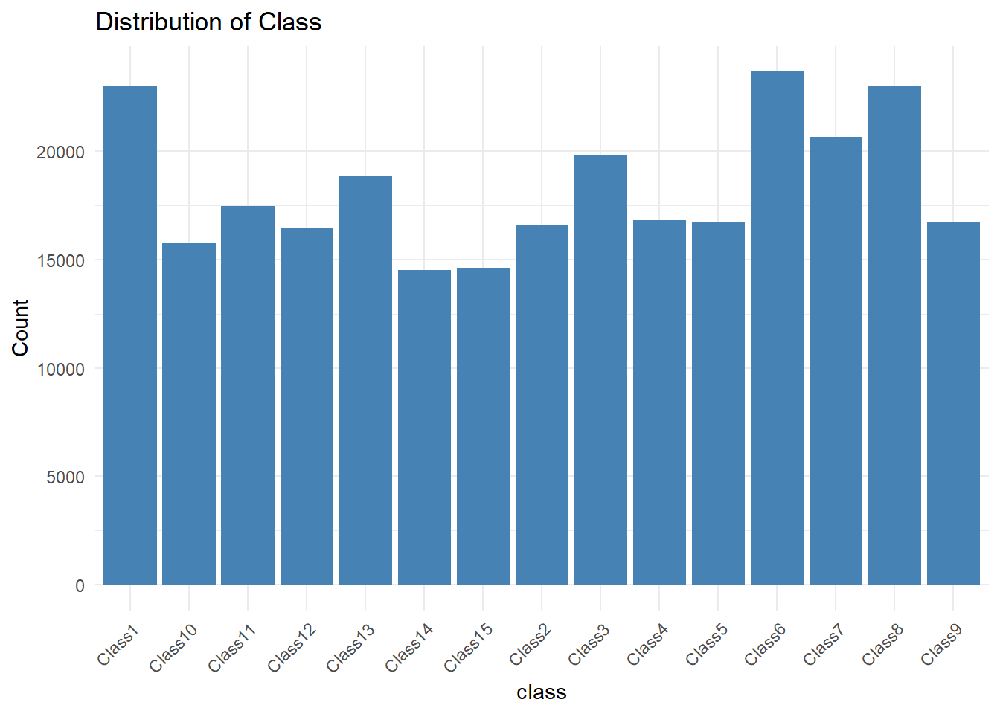
create_bar_plot(merged_data, "major", "Distribution of Major")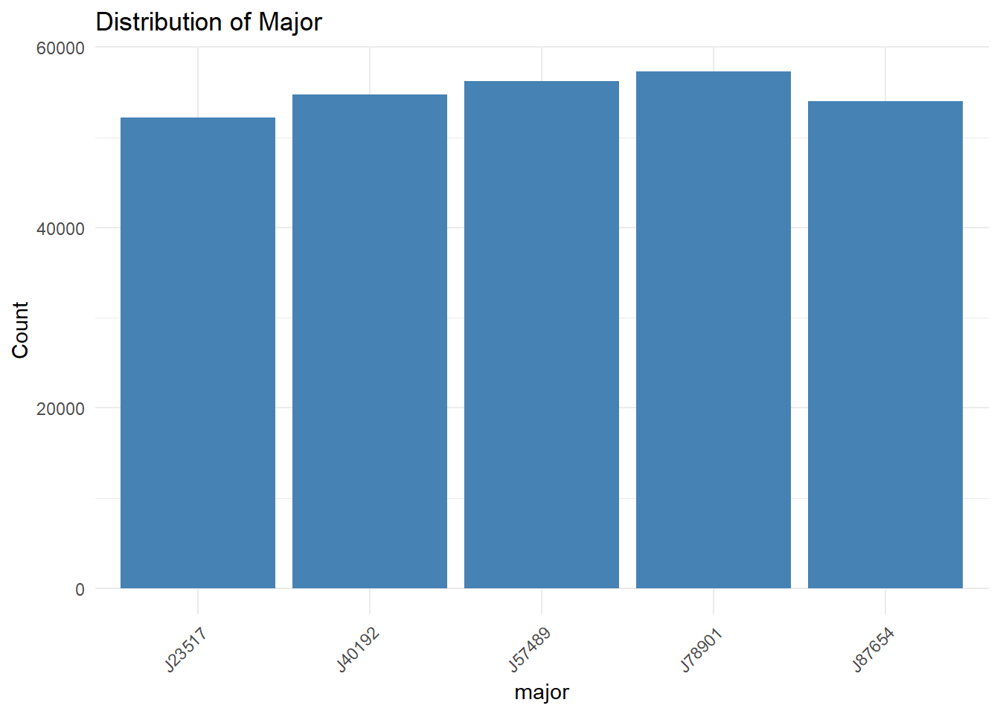
create_bar_plot(merged_data, "sex", "Distribution of Sex")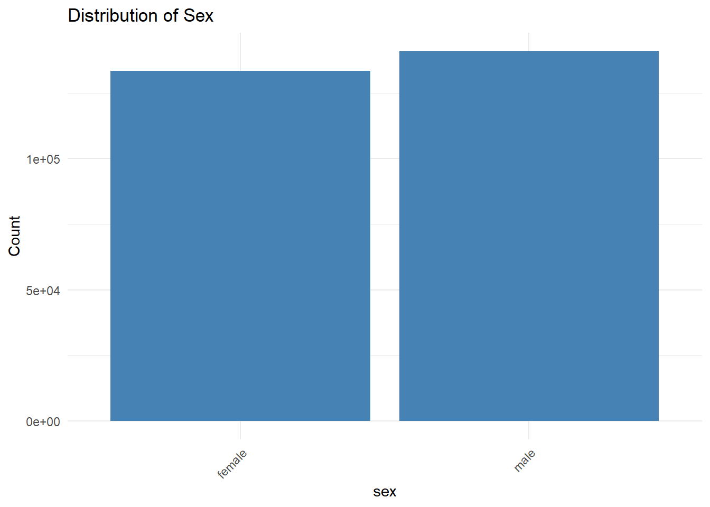
create_bar_plot(merged_data, "knowledge", "Distribution of Knowledge")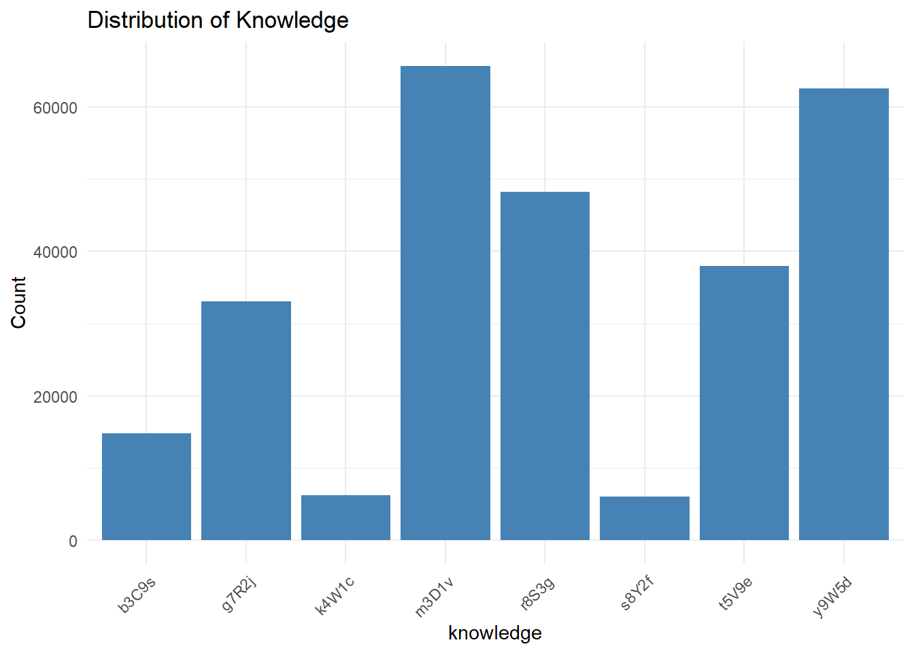
create_bar_plot(merged_data, "sub_knowledge", "Distribution of Sub-Knowledge")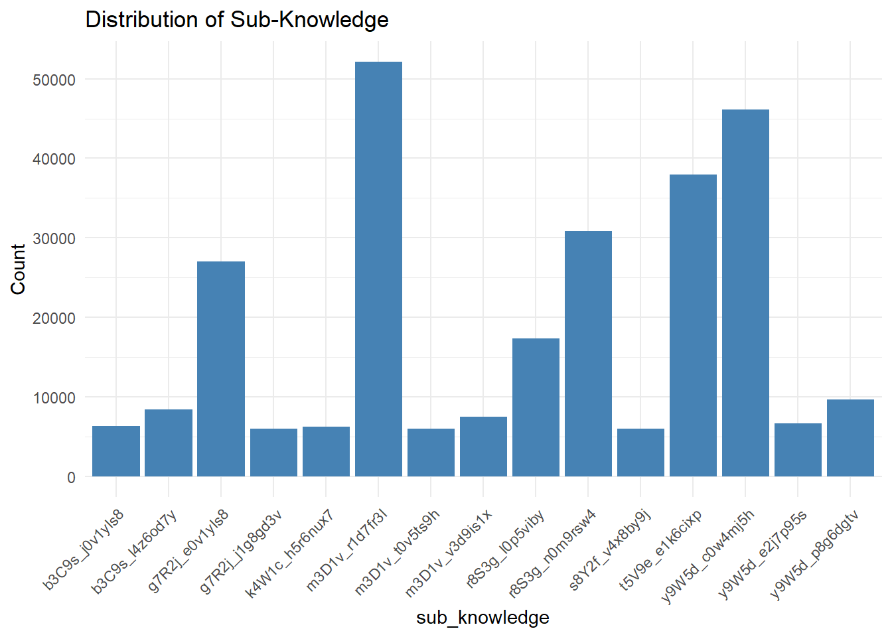
create_bar_plot(merged_data, "state", "Distribution of State")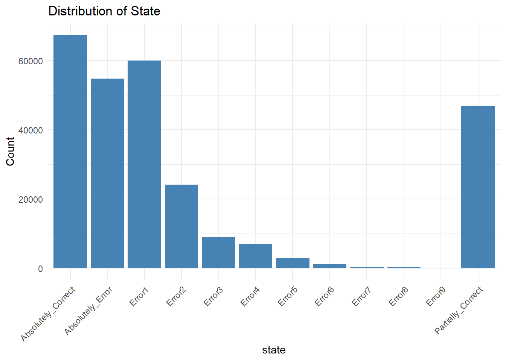
create_bar_plot(merged_data, "title_ID", "Distribution of Title ID")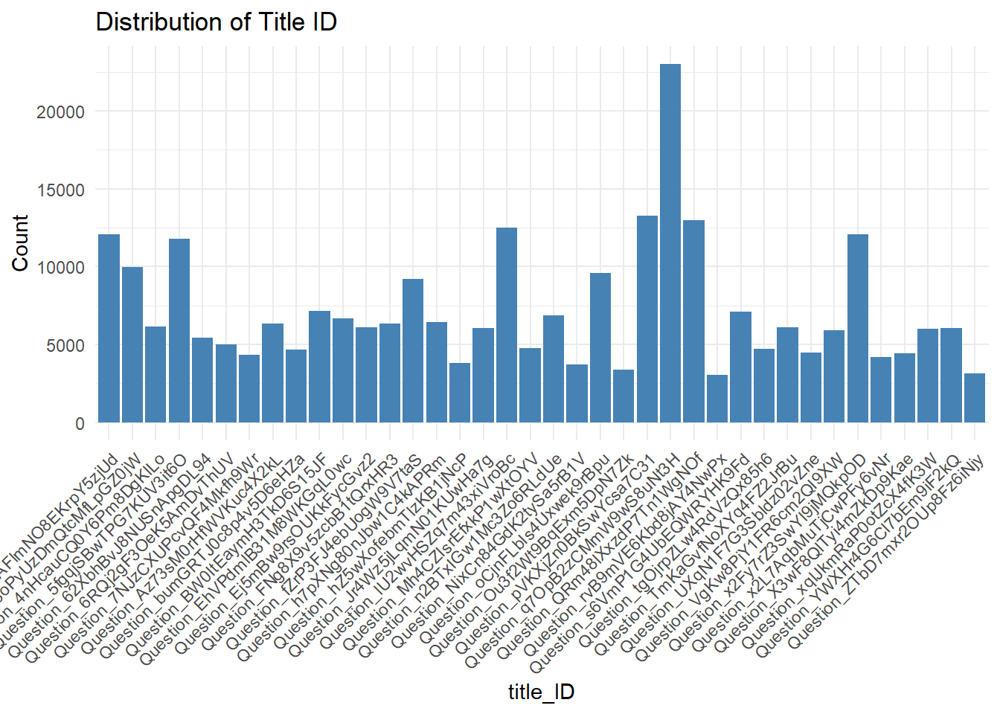
create_bar_plot(merged_data, "method", "Distribution of method")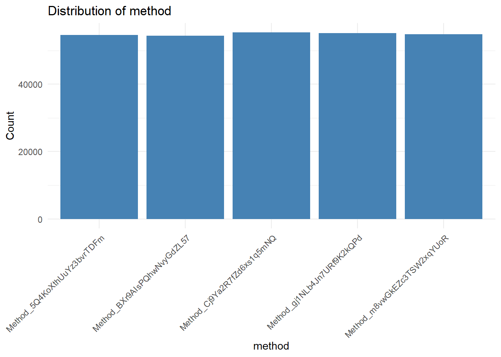
merged_data$actual_score <- as.numeric(as.character(merged_data$actual_score))
merged_data$timeconsume <- as.numeric(as.character(merged_data$timeconsume))
merged_data$age <- as.numeric(as.character(merged_data$age))
# Histogram for actual_score
ggplot(merged_data, aes(x = actual_score)) +
geom_histogram(bins = 30, fill = "steelblue") +
labs(title = "Distribution of Actual Scores", x = "Actual Score", y = "Frequency") +
theme_minimal()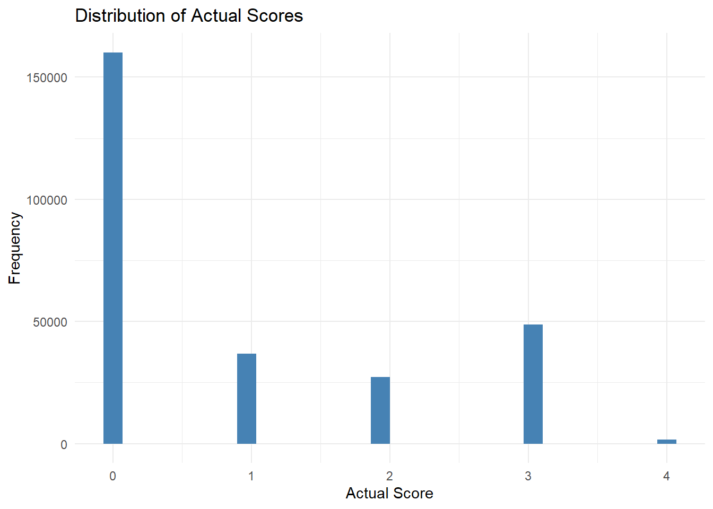
ggsave("distribution_of_actual_scores.png", width = 10, height = 8, dpi = 300)
# Histogram for timeconsume
ggplot(merged_data, aes(x = timeconsume)) +
geom_histogram(bins = 30, fill = "lightgreen") +
labs(title = "Distribution of Time Consumed", x = "Time Consumed", y = "Frequency") +
xlim(c(0, 60))Warning: Removed 6569 rows containing non-finite outside the scale range
(`stat_bin()`).Warning: Removed 2 rows containing missing values or values outside the scale range
(`geom_bar()`).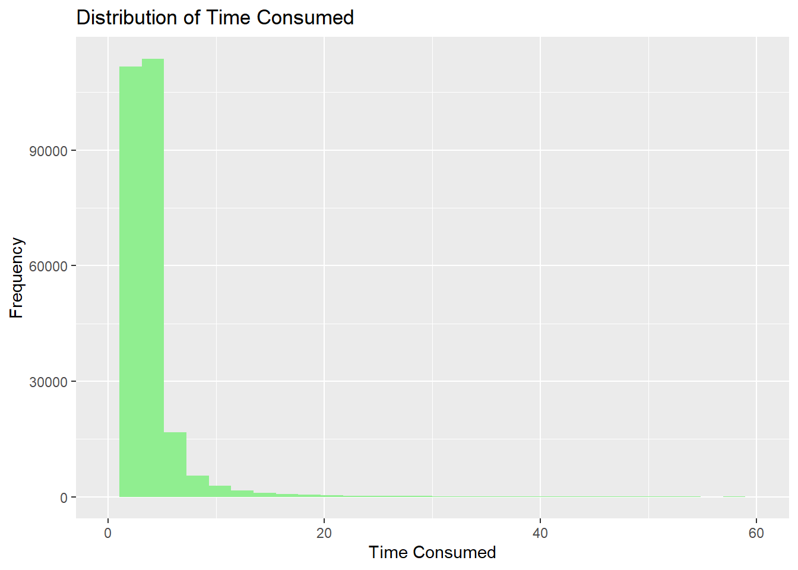
theme_minimal()List of 136
$ line :List of 6
..$ colour : chr "black"
..$ linewidth : num 0.5
..$ linetype : num 1
..$ lineend : chr "butt"
..$ arrow : logi FALSE
..$ inherit.blank: logi TRUE
..- attr(*, "class")= chr [1:2] "element_line" "element"
$ rect :List of 5
..$ fill : chr "white"
..$ colour : chr "black"
..$ linewidth : num 0.5
..$ linetype : num 1
..$ inherit.blank: logi TRUE
..- attr(*, "class")= chr [1:2] "element_rect" "element"
$ text :List of 11
..$ family : chr ""
..$ face : chr "plain"
..$ colour : chr "black"
..$ size : num 11
..$ hjust : num 0.5
..$ vjust : num 0.5
..$ angle : num 0
..$ lineheight : num 0.9
..$ margin : 'margin' num [1:4] 0points 0points 0points 0points
.. ..- attr(*, "unit")= int 8
..$ debug : logi FALSE
..$ inherit.blank: logi TRUE
..- attr(*, "class")= chr [1:2] "element_text" "element"
$ title : NULL
$ aspect.ratio : NULL
$ axis.title : NULL
$ axis.title.x :List of 11
..$ family : NULL
..$ face : NULL
..$ colour : NULL
..$ size : NULL
..$ hjust : NULL
..$ vjust : num 1
..$ angle : NULL
..$ lineheight : NULL
..$ margin : 'margin' num [1:4] 2.75points 0points 0points 0points
.. ..- attr(*, "unit")= int 8
..$ debug : NULL
..$ inherit.blank: logi TRUE
..- attr(*, "class")= chr [1:2] "element_text" "element"
$ axis.title.x.top :List of 11
..$ family : NULL
..$ face : NULL
..$ colour : NULL
..$ size : NULL
..$ hjust : NULL
..$ vjust : num 0
..$ angle : NULL
..$ lineheight : NULL
..$ margin : 'margin' num [1:4] 0points 0points 2.75points 0points
.. ..- attr(*, "unit")= int 8
..$ debug : NULL
..$ inherit.blank: logi TRUE
..- attr(*, "class")= chr [1:2] "element_text" "element"
$ axis.title.x.bottom : NULL
$ axis.title.y :List of 11
..$ family : NULL
..$ face : NULL
..$ colour : NULL
..$ size : NULL
..$ hjust : NULL
..$ vjust : num 1
..$ angle : num 90
..$ lineheight : NULL
..$ margin : 'margin' num [1:4] 0points 2.75points 0points 0points
.. ..- attr(*, "unit")= int 8
..$ debug : NULL
..$ inherit.blank: logi TRUE
..- attr(*, "class")= chr [1:2] "element_text" "element"
$ axis.title.y.left : NULL
$ axis.title.y.right :List of 11
..$ family : NULL
..$ face : NULL
..$ colour : NULL
..$ size : NULL
..$ hjust : NULL
..$ vjust : num 1
..$ angle : num -90
..$ lineheight : NULL
..$ margin : 'margin' num [1:4] 0points 0points 0points 2.75points
.. ..- attr(*, "unit")= int 8
..$ debug : NULL
..$ inherit.blank: logi TRUE
..- attr(*, "class")= chr [1:2] "element_text" "element"
$ axis.text :List of 11
..$ family : NULL
..$ face : NULL
..$ colour : chr "grey30"
..$ size : 'rel' num 0.8
..$ hjust : NULL
..$ vjust : NULL
..$ angle : NULL
..$ lineheight : NULL
..$ margin : NULL
..$ debug : NULL
..$ inherit.blank: logi TRUE
..- attr(*, "class")= chr [1:2] "element_text" "element"
$ axis.text.x :List of 11
..$ family : NULL
..$ face : NULL
..$ colour : NULL
..$ size : NULL
..$ hjust : NULL
..$ vjust : num 1
..$ angle : NULL
..$ lineheight : NULL
..$ margin : 'margin' num [1:4] 2.2points 0points 0points 0points
.. ..- attr(*, "unit")= int 8
..$ debug : NULL
..$ inherit.blank: logi TRUE
..- attr(*, "class")= chr [1:2] "element_text" "element"
$ axis.text.x.top :List of 11
..$ family : NULL
..$ face : NULL
..$ colour : NULL
..$ size : NULL
..$ hjust : NULL
..$ vjust : num 0
..$ angle : NULL
..$ lineheight : NULL
..$ margin : 'margin' num [1:4] 0points 0points 2.2points 0points
.. ..- attr(*, "unit")= int 8
..$ debug : NULL
..$ inherit.blank: logi TRUE
..- attr(*, "class")= chr [1:2] "element_text" "element"
$ axis.text.x.bottom : NULL
$ axis.text.y :List of 11
..$ family : NULL
..$ face : NULL
..$ colour : NULL
..$ size : NULL
..$ hjust : num 1
..$ vjust : NULL
..$ angle : NULL
..$ lineheight : NULL
..$ margin : 'margin' num [1:4] 0points 2.2points 0points 0points
.. ..- attr(*, "unit")= int 8
..$ debug : NULL
..$ inherit.blank: logi TRUE
..- attr(*, "class")= chr [1:2] "element_text" "element"
$ axis.text.y.left : NULL
$ axis.text.y.right :List of 11
..$ family : NULL
..$ face : NULL
..$ colour : NULL
..$ size : NULL
..$ hjust : num 0
..$ vjust : NULL
..$ angle : NULL
..$ lineheight : NULL
..$ margin : 'margin' num [1:4] 0points 0points 0points 2.2points
.. ..- attr(*, "unit")= int 8
..$ debug : NULL
..$ inherit.blank: logi TRUE
..- attr(*, "class")= chr [1:2] "element_text" "element"
$ axis.text.theta : NULL
$ axis.text.r :List of 11
..$ family : NULL
..$ face : NULL
..$ colour : NULL
..$ size : NULL
..$ hjust : num 0.5
..$ vjust : NULL
..$ angle : NULL
..$ lineheight : NULL
..$ margin : 'margin' num [1:4] 0points 2.2points 0points 2.2points
.. ..- attr(*, "unit")= int 8
..$ debug : NULL
..$ inherit.blank: logi TRUE
..- attr(*, "class")= chr [1:2] "element_text" "element"
$ axis.ticks : list()
..- attr(*, "class")= chr [1:2] "element_blank" "element"
$ axis.ticks.x : NULL
$ axis.ticks.x.top : NULL
$ axis.ticks.x.bottom : NULL
$ axis.ticks.y : NULL
$ axis.ticks.y.left : NULL
$ axis.ticks.y.right : NULL
$ axis.ticks.theta : NULL
$ axis.ticks.r : NULL
$ axis.minor.ticks.x.top : NULL
$ axis.minor.ticks.x.bottom : NULL
$ axis.minor.ticks.y.left : NULL
$ axis.minor.ticks.y.right : NULL
$ axis.minor.ticks.theta : NULL
$ axis.minor.ticks.r : NULL
$ axis.ticks.length : 'simpleUnit' num 2.75points
..- attr(*, "unit")= int 8
$ axis.ticks.length.x : NULL
$ axis.ticks.length.x.top : NULL
$ axis.ticks.length.x.bottom : NULL
$ axis.ticks.length.y : NULL
$ axis.ticks.length.y.left : NULL
$ axis.ticks.length.y.right : NULL
$ axis.ticks.length.theta : NULL
$ axis.ticks.length.r : NULL
$ axis.minor.ticks.length : 'rel' num 0.75
$ axis.minor.ticks.length.x : NULL
$ axis.minor.ticks.length.x.top : NULL
$ axis.minor.ticks.length.x.bottom: NULL
$ axis.minor.ticks.length.y : NULL
$ axis.minor.ticks.length.y.left : NULL
$ axis.minor.ticks.length.y.right : NULL
$ axis.minor.ticks.length.theta : NULL
$ axis.minor.ticks.length.r : NULL
$ axis.line : list()
..- attr(*, "class")= chr [1:2] "element_blank" "element"
$ axis.line.x : NULL
$ axis.line.x.top : NULL
$ axis.line.x.bottom : NULL
$ axis.line.y : NULL
$ axis.line.y.left : NULL
$ axis.line.y.right : NULL
$ axis.line.theta : NULL
$ axis.line.r : NULL
$ legend.background : list()
..- attr(*, "class")= chr [1:2] "element_blank" "element"
$ legend.margin : 'margin' num [1:4] 5.5points 5.5points 5.5points 5.5points
..- attr(*, "unit")= int 8
$ legend.spacing : 'simpleUnit' num 11points
..- attr(*, "unit")= int 8
$ legend.spacing.x : NULL
$ legend.spacing.y : NULL
$ legend.key : list()
..- attr(*, "class")= chr [1:2] "element_blank" "element"
$ legend.key.size : 'simpleUnit' num 1.2lines
..- attr(*, "unit")= int 3
$ legend.key.height : NULL
$ legend.key.width : NULL
$ legend.key.spacing : 'simpleUnit' num 5.5points
..- attr(*, "unit")= int 8
$ legend.key.spacing.x : NULL
$ legend.key.spacing.y : NULL
$ legend.frame : NULL
$ legend.ticks : NULL
$ legend.ticks.length : 'rel' num 0.2
$ legend.axis.line : NULL
$ legend.text :List of 11
..$ family : NULL
..$ face : NULL
..$ colour : NULL
..$ size : 'rel' num 0.8
..$ hjust : NULL
..$ vjust : NULL
..$ angle : NULL
..$ lineheight : NULL
..$ margin : NULL
..$ debug : NULL
..$ inherit.blank: logi TRUE
..- attr(*, "class")= chr [1:2] "element_text" "element"
$ legend.text.position : NULL
$ legend.title :List of 11
..$ family : NULL
..$ face : NULL
..$ colour : NULL
..$ size : NULL
..$ hjust : num 0
..$ vjust : NULL
..$ angle : NULL
..$ lineheight : NULL
..$ margin : NULL
..$ debug : NULL
..$ inherit.blank: logi TRUE
..- attr(*, "class")= chr [1:2] "element_text" "element"
$ legend.title.position : NULL
$ legend.position : chr "right"
$ legend.position.inside : NULL
$ legend.direction : NULL
$ legend.byrow : NULL
$ legend.justification : chr "center"
$ legend.justification.top : NULL
$ legend.justification.bottom : NULL
$ legend.justification.left : NULL
$ legend.justification.right : NULL
$ legend.justification.inside : NULL
$ legend.location : NULL
$ legend.box : NULL
$ legend.box.just : NULL
$ legend.box.margin : 'margin' num [1:4] 0cm 0cm 0cm 0cm
..- attr(*, "unit")= int 1
$ legend.box.background : list()
..- attr(*, "class")= chr [1:2] "element_blank" "element"
$ legend.box.spacing : 'simpleUnit' num 11points
..- attr(*, "unit")= int 8
[list output truncated]
- attr(*, "class")= chr [1:2] "theme" "gg"
- attr(*, "complete")= logi TRUE
- attr(*, "validate")= logi TRUEggsave("distribution_of_timeconsumed.png", width = 10, height = 8, dpi = 300)Warning: Removed 6569 rows containing non-finite outside the scale range (`stat_bin()`).
Removed 2 rows containing missing values or values outside the scale range
(`geom_bar()`).# Histogram for age
ggplot(merged_data, aes(x = age)) +
geom_histogram(bins = 30, fill = "steelblue") +
labs(title = "Distribution of Age", x = "Age", y = "Frequency") +
xlim(c(18, 25)) +
theme_minimal()Warning: Removed 2 rows containing missing values or values outside the scale range
(`geom_bar()`).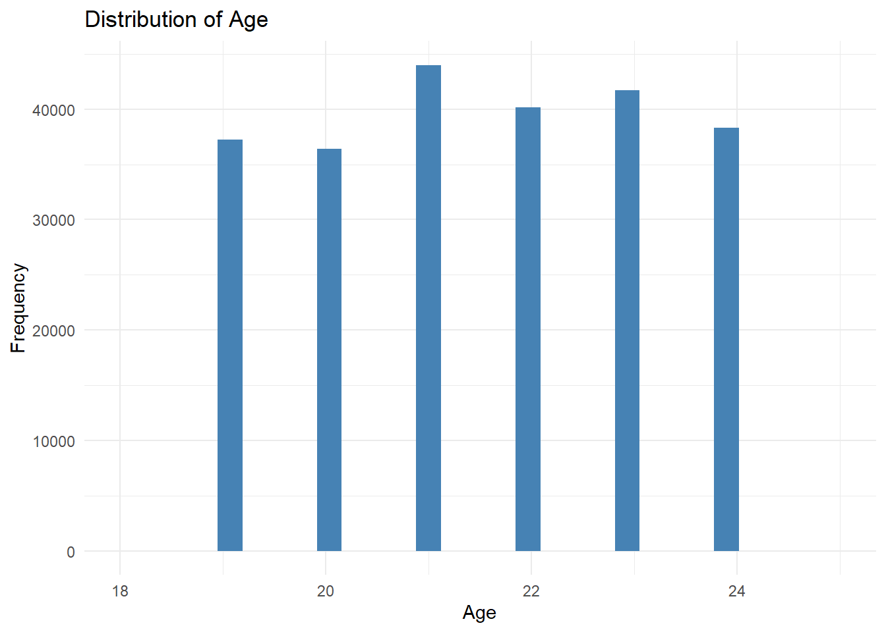
ggsave("distribution_of_age.png", width = 10, height = 8, dpi = 300)Warning: Removed 2 rows containing missing values or values outside the scale range
(`geom_bar()`).score &knowledge
library(ggplot2)
# Plotting histogram of actual scores
ggplot(merged_data, aes(x = actual_score)) +
geom_histogram(bins = 30, fill = "steelblue") +
facet_wrap(~knowledge) +
labs(title = "Distribution of Actual Scores by Knowledge Type", x = "Actual Score", y = "Count")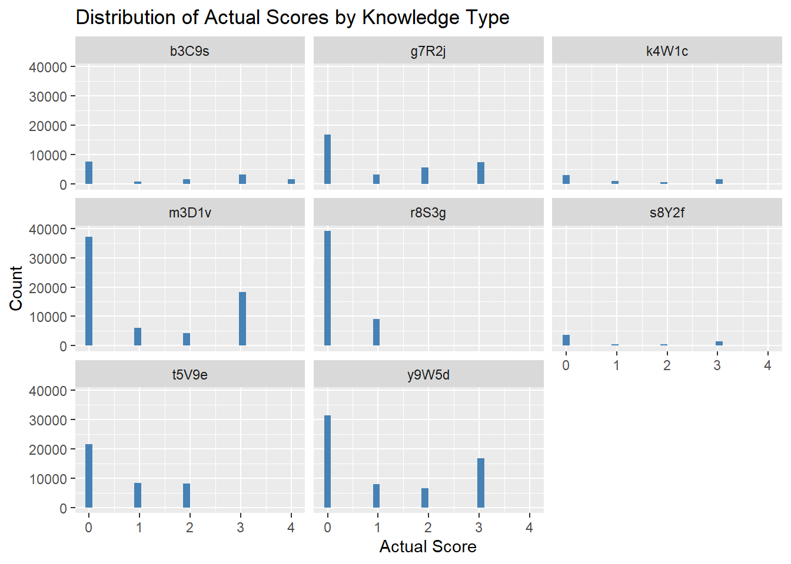
library(ggplot2)
ggplot(merged_data, aes(x = actual_score)) +
geom_histogram(bins = 30, fill = "steelblue") +
facet_wrap(~sub_knowledge) +
labs(title = "Distribution of Actual Scores by SubKnowledge", x = "Actual Score", y = "Count")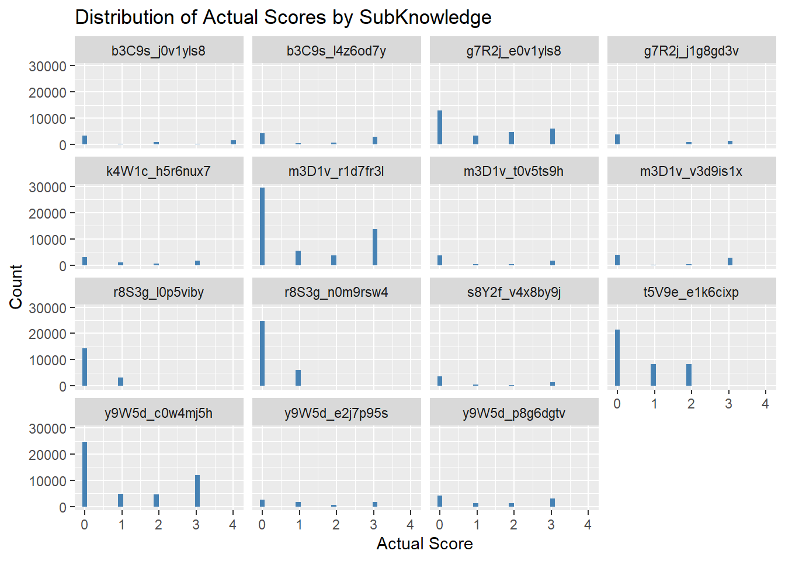
score & state
library(ggplot2)
# Bar plot to show the count of each actual_score within each state
ggplot(merged_data, aes(x = state, fill = factor(actual_score))) +
geom_bar(position = "dodge") +
labs(title = "Distribution of Actual Scores by State", x = "State", y = "Count", fill = "Actual Score") +
theme_minimal() +
theme(axis.text.x = element_text(angle = 45, hjust = 1)) 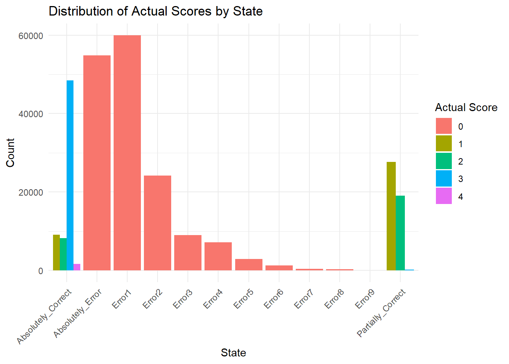
Heatmap for Score & state
score_state_table <- table(merged_data$state, merged_data$actual_score)
score_state_melted <- melt(score_state_table)
# Plot heatmap
ggplot(score_state_melted, aes(x = Var1, y = Var2, fill = value)) +
geom_tile(color = "white") +
scale_fill_gradient(low = "lightblue", high = "red") +
labs(title = "Heatmap of Actual Score by State", x = "State", y = "Actual Score", fill = "Count") +
theme_minimal() +
theme(axis.text.x = element_text(angle = 45, hjust = 1))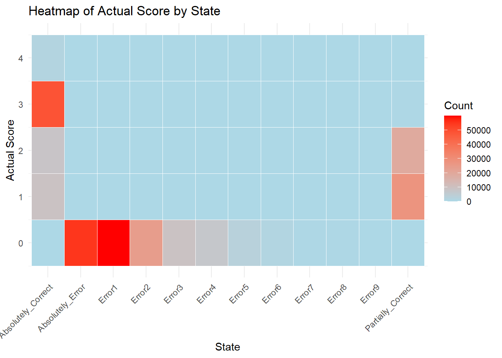
ggsave("heatmap_scores_by_state.png", width = 12, height = 8, dpi = 300)Score & method
library(ggplot2)
# Grouped bar plot to show the count of each actual_score within each method
ggplot(merged_data, aes(x = method, fill = factor(actual_score))) +
geom_bar(position = "dodge") +
labs(title = "Distribution of Actual Scores by Method", x = "Method", y = "Count", fill = "Actual Score") +
theme_minimal() +
theme(axis.text.x = element_text(angle = 45, hjust = 1))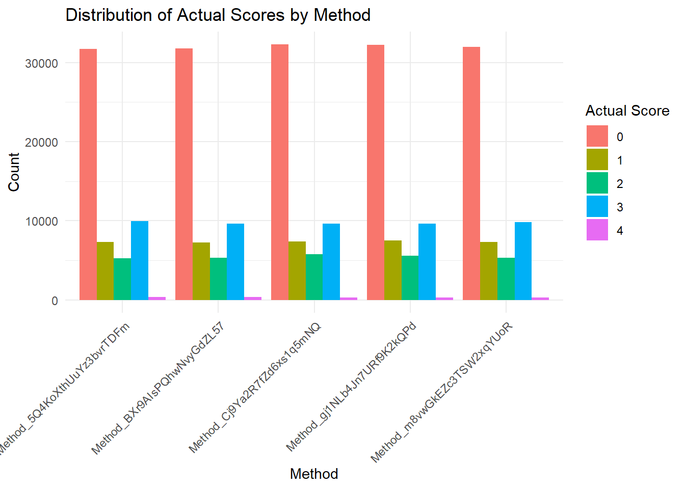
method & knowledge
table_method_knowledge <- table(merged_data$method, merged_data$knowledge)
print(table_method_knowledge)
b3C9s g7R2j k4W1c m3D1v r8S3g s8Y2f t5V9e y9W5d
Method_5Q4KoXthUuYz3bvrTDFm 3048 6545 1165 13187 9469 1178 7616 12394
Method_BXr9AIsPQhwNvyGdZL57 2981 6687 1257 13025 9272 1199 7581 12364
Method_Cj9Ya2R7fZd6xs1q5mNQ 2981 6810 1231 13198 9821 1216 7623 12549
Method_gj1NLb4Jn7URf9K2kQPd 2776 6420 1286 13185 10033 1226 7558 12754
Method_m8vwGkEZc3TSW2xqYUoR 2994 6579 1301 13052 9641 1207 7604 12477ggplot(merged_data, aes(x = knowledge, fill = method)) +
geom_bar(position = "dodge") +
labs(title = "Distribution of Method by Knowledge", x = "Knowledge", y = "Count", fill = "Method") +
theme_minimal() +
theme(axis.text.x = element_text(angle = 45, hjust = 1)) 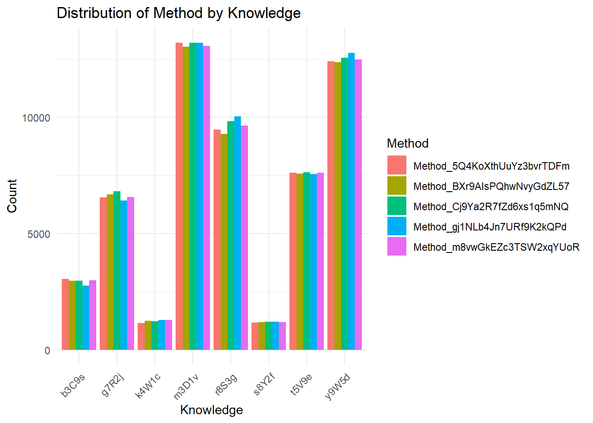
summary_stats <- merged_data %>%
group_by(method) %>%
summarise(Mean = mean(timeconsume, na.rm = TRUE),
Median = median(timeconsume, na.rm = TRUE),
IQR = IQR(timeconsume, na.rm = TRUE),
Max = max(timeconsume, na.rm = TRUE),
Min = min(timeconsume, na.rm = TRUE))Knowlege & subknowledge
table_knowledge_subknowledge <- table(merged_data$knowledge, merged_data$sub_knowledge)
print(table_knowledge_subknowledge)
b3C9s_j0v1yls8 b3C9s_l4z6od7y g7R2j_e0v1yls8 g7R2j_j1g8gd3v
b3C9s 6332 8448 0 0
g7R2j 0 0 27000 6041
k4W1c 0 0 0 0
m3D1v 0 0 0 0
r8S3g 0 0 0 0
s8Y2f 0 0 0 0
t5V9e 0 0 0 0
y9W5d 0 0 0 0
k4W1c_h5r6nux7 m3D1v_r1d7fr3l m3D1v_t0v5ts9h m3D1v_v3d9is1x
b3C9s 0 0 0 0
g7R2j 0 0 0 0
k4W1c 6240 0 0 0
m3D1v 0 52136 6028 7483
r8S3g 0 0 0 0
s8Y2f 0 0 0 0
t5V9e 0 0 0 0
y9W5d 0 0 0 0
r8S3g_l0p5viby r8S3g_n0m9rsw4 s8Y2f_v4x8by9j t5V9e_e1k6cixp
b3C9s 0 0 0 0
g7R2j 0 0 0 0
k4W1c 0 0 0 0
m3D1v 0 0 0 0
r8S3g 17387 30849 0 0
s8Y2f 0 0 6026 0
t5V9e 0 0 0 37982
y9W5d 0 0 0 0
y9W5d_c0w4mj5h y9W5d_e2j7p95s y9W5d_p8g6dgtv
b3C9s 0 0 0
g7R2j 0 0 0
k4W1c 0 0 0
m3D1v 0 0 0
r8S3g 0 0 0
s8Y2f 0 0 0
t5V9e 0 0 0
y9W5d 46161 6660 9717melted_data <- melt(table_knowledge_subknowledge)
# Create heatmap
ggplot(melted_data, aes(x = Var1, y = Var2, fill = value)) +
geom_tile() +
scale_fill_gradient(low = "white", high = "steelblue") +
labs(title = "Heatmap of Knowledge vs. Sub-Knowledge", x = "Knowledge", y = "Sub-Knowledge") +
theme_minimal()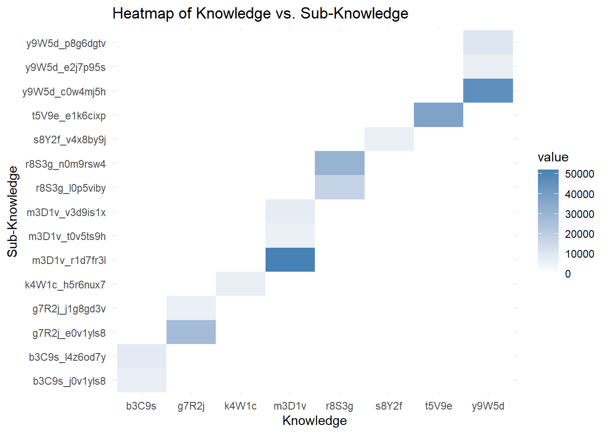
library(ggplot2)
# Box plot for actual_score grouped by knowledge
ggplot(merged_data, aes(x=knowledge, y=actual_score, fill=knowledge)) +
geom_boxplot() +
labs(title="Distribution of Actual Scores by Knowledge", x="Knowledge", y="Actual Score") +
theme_minimal() +
theme(axis.text.x = element_text(angle=45, hjust=1))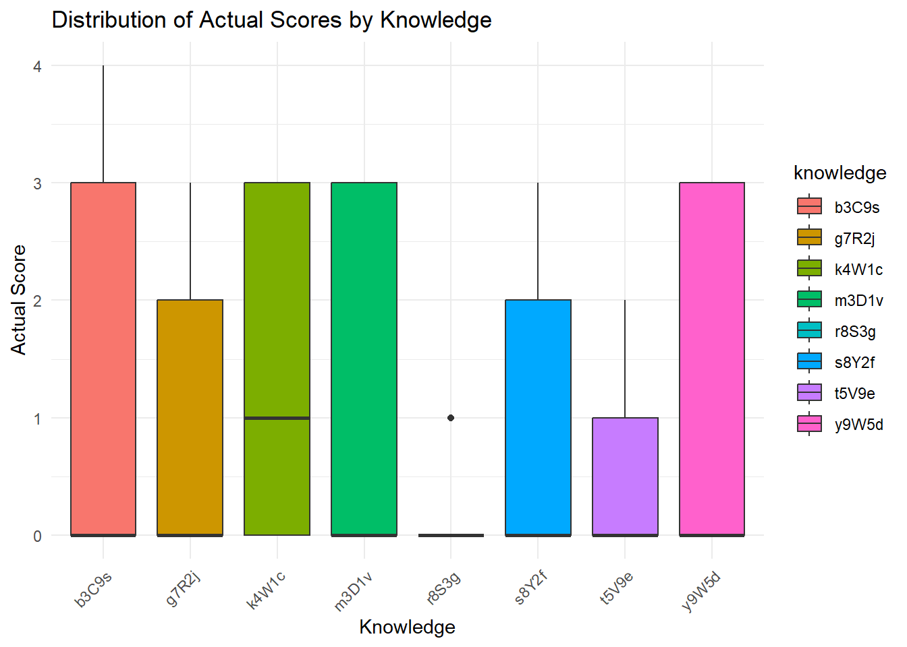
# Box plot for actual_score grouped by sub_knowledge
ggplot(merged_data, aes(x=sub_knowledge, y=actual_score, fill=sub_knowledge)) +
geom_boxplot() +
labs(title="Distribution of Actual Scores by Sub-Knowledge", x="Sub-Knowledge", y="Actual Score") +
theme_minimal() +
theme(axis.text.x = element_text(angle=45, hjust=1))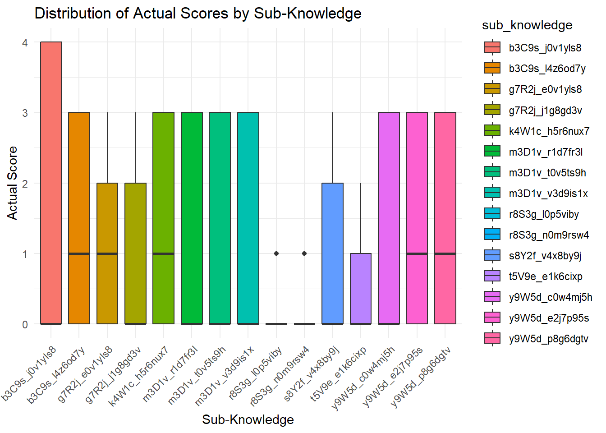